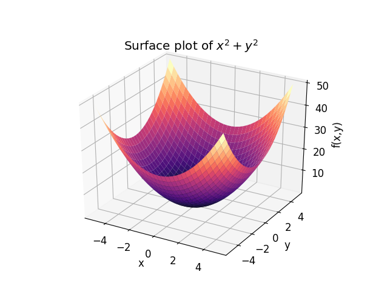

Multivariable derivatives
Formal definition
Let \(f(x, y)\) be a function with two variables, then the formal definition of the partial derivative of \(f\) with respect to \(x\) is:
Likewise for \(f\) with respect to \(y\), the partial derivative is:
The main take away is that we give a small nudge to the variable we want to get the derivative of.
Symmetry in higher order derivatives
A higher order derivative is when we take the derivative of a function multiple times. This is denoted as
which means that we first take the derivative with respect to \(x\), and then a second time with respect to \(x\).
Likewise, we can also take the derivative with respect to \(x\), and then with respect to \(y\). A beautiful result of this, is that this is the same as taking the derivative first with respect to \(y\), and then with respect to \(x\), which means that:
Note
The notion of a higher order derivative is only applicable if the order of the derivative is continuous around a point \(P\), e.g. the point we are evaluating.
Simpler notation
If you get tired of writing \(\dfrac{\partial^2f}{\partial x \partial y}\), this can be written simpler as \(f_{xy}\).
Gradient
Let \(f(x_1, x_2, \ldots, x_n)\) be a multivariable function with \(n\) variables, then the gradient of \(f\) is:
The \(\nabla\) (nabla) symbol denotes a vector of differential operators, so \(\nabla f\), means that we apply the operator \(\nabla\) to \(f\).
Visual example of the gradient
Let \(f(x, y) = x^2 + y^2\). The illustration below is the graph of \(f\).

We can find the gradient of \(f\), which is \(\nabla f = \begin{bmatrix} 2x & 2y \end{bmatrix}^T\). To visualize the gradient, we create a vector field plot of \(\nabla f\), which is also called the gradient plot:

Here we can see that each of the vectors point in the direction of the steepest ascent. Or in other words, the gradient points into the direction of the steepest ascent. Another thing to note, is that the gradient vector is always perpendicular to contour lines.
Note
It is not guaranteed that it points towards the highest point in the function, it only points in the direction of the steepest ascent!
Directional derivative
As of now we have only looked at partial derivatives such as \(\dfrac{\partial f}{\partial x}\) which is the derivative in the \(x\) direction, and likewise \(\dfrac{\partial f}{\partial y}\) is the derivative in the \(y\)-direction. However, we can also take the derivative in any other direction, which is known as the directional derivative.
Let \(f(x, y)\) be a function and suppose we want to take the derivative in the direction of \(\vec{v} = (-1, 2)\). The directional derivative then is:
Note that \(\nabla_{\vec v}\) is used to denote the gradient of \(f\) in the direction of \(\vec{v}\). As you can see, we simply take the linear combination of the partial derivatives and each of the corresponding components in \(\vec{v}\). The sharp eyed reader will see that this is the dot-product of \(\vec{v}\) and the gradient of \(f\), thus:
Note that \(\vec{v}\cdot\nabla f\) is still a function, and we need to evaluate it at a point \(\vec{a}\) to get the scalar value. This also leads to the formal defintion of the directional derivative, which is defined as:
The directional derivative can be defined in any direction, but a particular interesting one is in the direction of the steepest ascent, which is given by the gradient. This is useful to find a local optimum or minimum. More about this later when we are discussing the applications of multivariable derivatives.
Note
Note that \(\vec{v} \cdot \nabla f\) is a dot-product of two vectors, which results in a scalar value (if \(f\) is evaluated).
Caution
If the scalar value is to be interpreted as a slope, then \(\vec{v}\) must be a unit vector, e.g. \(||\ \vec{v}\ || = 1\).
Vector-valued functions
Suppose we have a curve \(C\) which is parametrized by \(x = x(t)\) and \(y = y(t)\) on the interval \(a \leq t \leq b\), then we can vectorize this in the following way:
Note that \(\vec{r}(t)\) is a vector-valued function. Another way of writing this is using the unit vectors \(\hat{i}\) and \(\hat{j}\), giving \(\vec{r}(t) = x(t)\hat{i} + y(t)\hat{j}\).
The formal definition of the derivative of a vector-valued function is:
This can then be used to find the derivative of a vector-valued function. This is useful to find for example the velocity of \(\vec{r}(t)\) which is \(x'(t)\hat{i} + y'(t)\hat{j}\), or the speed which is \(\sqrt{(x'(t))^2 + (y'(t))^2}\).
Multivariable chain rule
Suppose we have a function \(f(x, y)\) with \(x(t)\) and \(y(t)\), then we want to find the derivative of \(f(x(t), y(t))\). Simply plugging all the values in and taking the ordinary derivative will give us the result. However, if you take notice, you will see that it will be in the form of:
This derivative gives the change in \(f\) by the change of \(t\).
Note that this is the dot-product of the partial derivatives and the ordinary derivatives. Let \(\vec{v} = (x(t), y(y))\). We know that the vector of partial derivatives of \(f\) is the gradient of \(f\). The other vector is a vector with the ordinary derivatives. Rewriting this in vector notation gives
which is the generalized multivariable chain rule. This example only shows two variables, but this extends to any number of variables. Also note that \(f\) is a scalar-valued function that is composed with a vector-valued function. In other words, the input is one dimension, the function in between can be in any dimensions, and the output is again in one dimension. The dimension of \(f\) is obviously determined by the number of components that are in the output of the vector-valued function.
Notice the similarity with the definition of the directional derivative. By giving a small nudge to \(t\), we are moving the \(\vec{v}\) a little bit, and as a result we have a small change in \(f\). The change in \(f\) is given by the derivative of \(\vec{v}\). Or in other words, we are moving into the direction of \(\vec{v}'(t)\). This beautiful results tells us that the multivariable chain rule is essentially a directional derivative in the direction of \(\vec v'(t)\):